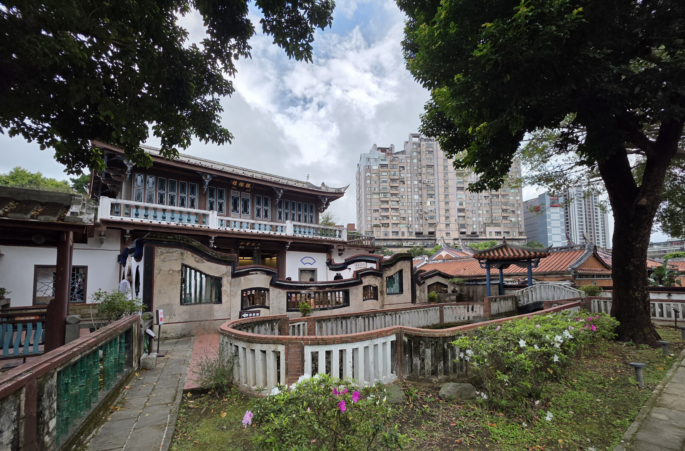
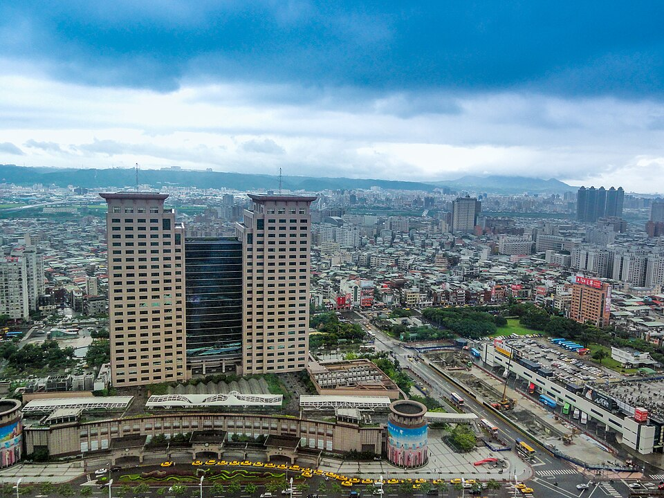
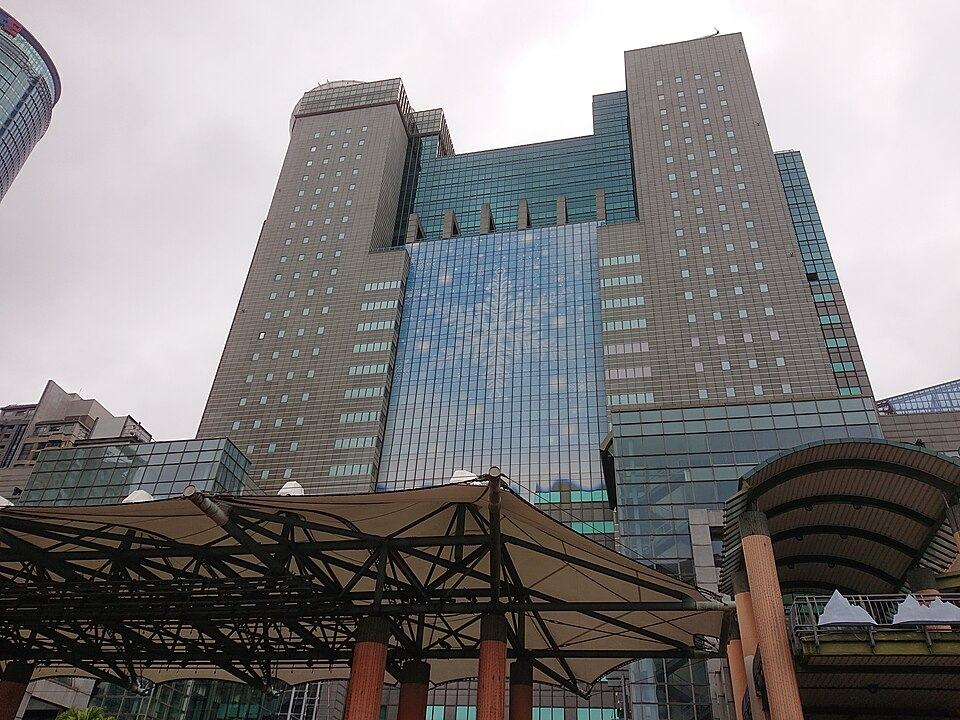
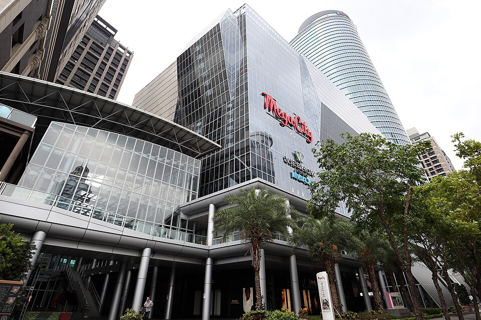
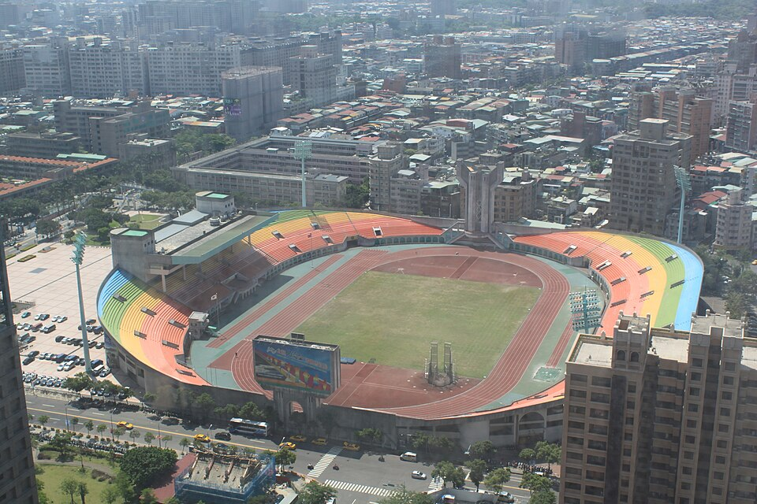
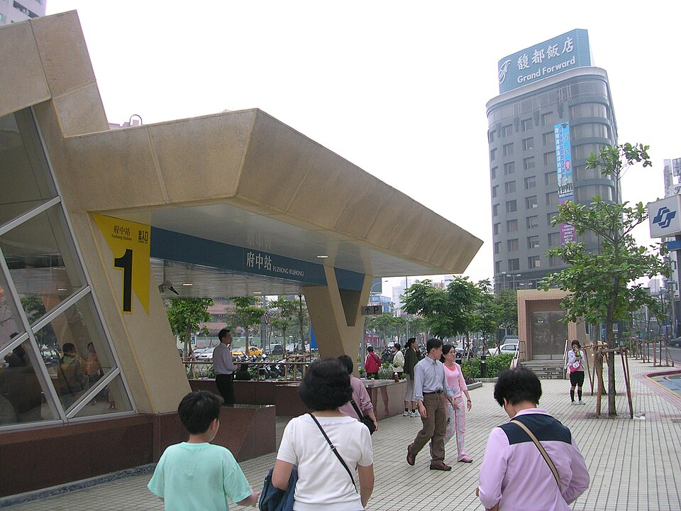
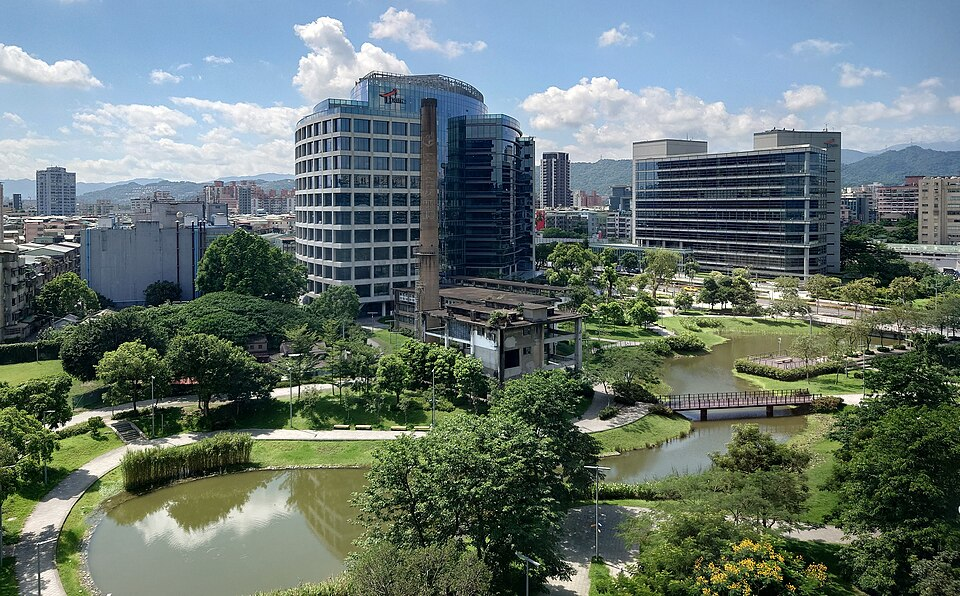
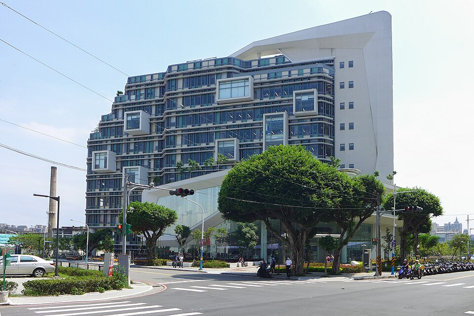

板橋怎麼玩
林家花園

林家花園的正式名稱為「林本源園邸」。園邸與林家的宅邸、庭園建設密切相關，是認識清代板橋的重要文化地標。
池水、亭臺、曲折的廊道與庭院，展現傳統園林透過視線與動線安排景觀的方式。走進園邸，也能從建築與空間，理解林家的財富、文化活動及其與地方發展的關係。
它為板橋保留了一種不同於高樓與車流的尺度：在城市裡，仍能沿著庭園緩步移動，閱讀更早的地方故事。
板橋車站


板橋車站是對外交通的重要入口。臺鐵、高鐵、捷運與周邊公車轉乘機能，使它同時服務日常通勤與跨城市旅行。車站周邊的人流，也支撐了新板特區的商業活動。
市政府、市民廣場與跨年


新北市政府大樓是板橋行政中心角色的具體地標。前方的市民廣場，則提供市民停留、相聚與參與活動的公共空間。
耶誕城與跨年相關活動，使這一帶在節慶時刻呈現不同於平日的樣貌。不過，各年度活動場地與形式可能調整，實際安排應以當年公告為準。
大小遠百、誠品生活與麗寶百貨


百貨與商場是板橋日常生活的一部分。「大遠百」指 Mega City 板橋大遠百；常被稱作「小遠百」的則是遠東百貨板橋中山店。兩者串起新板特區與既有市區的商業活動。
誠品生活新板與麗寶百貨，也讓車站周邊增加購物、餐飲與休閒選擇。值得區分的是，誠品生活新板位於新板特區，誠品生活板橋則位於府中一帶；它們分別融入不同的商圈生活。
第一運動場


板橋第一運動場及其周邊，是城市裡重要的運動與休憩空間。在車站、高樓與商場之外，這裡提供跑步、散步及戶外活動的場域，呈現板橋更貼近日常生活的一面。
府中：舊市區商圈


府中一帶是閱讀板橋舊市區的重要入口。街道、店家、廟宇與附近的林家花園，讓早期街市的歷史與今日的消費、生活空間彼此交疊。
相較於新板特區的高樓與大型街廓，府中更適合以步行探索。沿著街道移動，可以從商圈的熱鬧走向巷弄，也能逐步接近板橋早期城市發展的核心。
遠東園區：從工廠到研發辦公空間


亞東醫院站周邊的遠東園區，正式名稱為「台北遠東通訊園區 Tpark」。園區由遠東紡織板橋廠轉型，發展為研發與辦公空間，是板橋產業地景轉變的一個例子。
從紡織製造到通訊、數位與研發產業，園區呈現了工業用地如何被重新使用。這段轉型，也呼應板橋由戰後工業城市走向多元都會機能的歷程。
新北總圖：城市裡的閱讀空間


新北市立圖書館總館位於板橋貴興路，2015 年啟用，是亞東醫院站周邊的重要公共文化設施。
圖書館提供閱讀、學習與文化活動的空間，讓這一帶除了辦公與商業機能，也有市民可以停留的公共場所。它不在府中舊商圈核心，而是認識板橋南側生活圈的另一個入口。